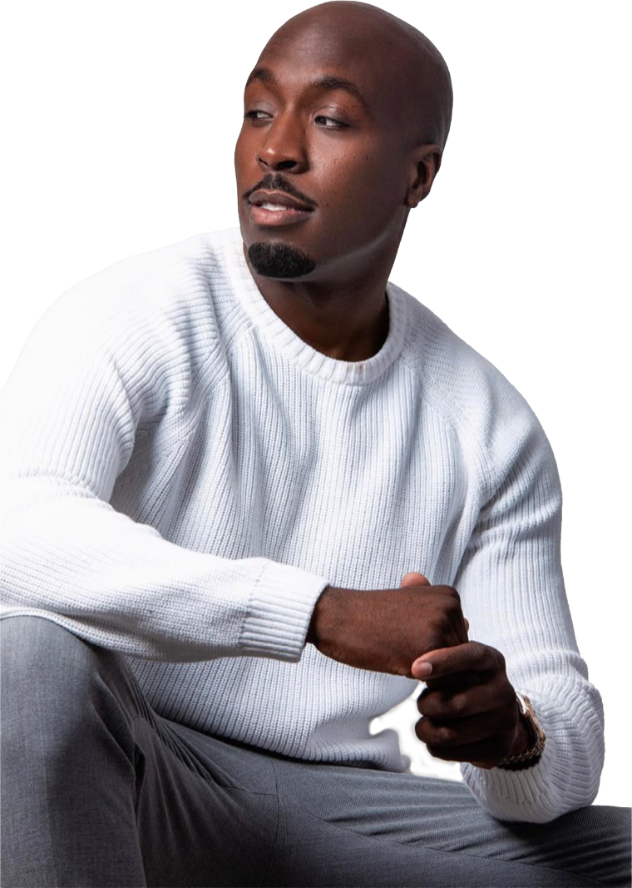

Hey, wij zijn Fernando en Ouassima aka de wekelijkse vaste stemmen in de Find your flow de podcast. Wij zijn op een zoektocht naar wat artiesten hebben gedaan om te slagen in deze moeilijke industrie. Hier nemen we jullie in mee door wekelijks vragen te stellen aan de artiesten om erachter te komen wat zij hebben gedaan om te staan waar ze nu staan en wat het hun gaande weg heeft opgeleverd.
Hi ik ben Ouassima, ik ben jarenlang zelf topsporter geweest en heb daarmee de hele wereld gezien en ervaren. Tegenwoordig ben ik al een paar jaar in de radiowereld en heb ik vele grote artiesten over de hele wereld mogen interviewen. De komende afleveringen helpen Fernando en ik samen met de wekelijkse gasten, jullie naar het zoeken van je eigen flow in deze muziekwereld en vertellen we een paar behind the scene verhalen.
Hey ik ben Fernando, dagelijks houd ik mij bezig met radio maken. Ik ben altijd in de weer geweest met muziekgenres en nieuwe talenten ontdekken. Vroeger zat ik ook in de rapscene en vergelijken met toen is het nu erg verandert. Daarom lijkt het mij leuk om jullie luisteraars een handje op weg te helpen samen met Ouassima en de wekelijkse gasten, naar het vinden JOUW flow in de muziekindustrie.
